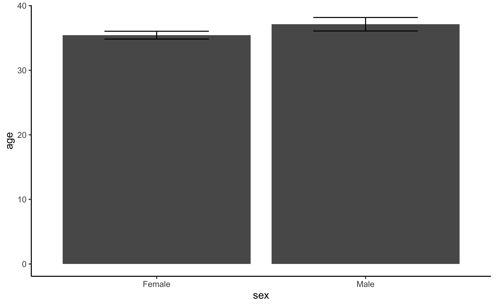

To start using the data we recommend first loading the package by
typing the following code into your R console.
Once the package is loaded, we can start calling the data under the
name anxiety. The documentation for the data itself, as
well as for each variable, can be viewed by typing ?anxiety
into your R console.
Obtaining descriptive statistics
Assuming we want to calculate the average age while
separating the results by the sex and zone
variables, we can do this with just one line of code:
anxiety[, .(mean_age = mean(age)), .(sex, zone)]
#> sex zone mean_age
#> 1: Female CZ 30.46222
#> 2: Male CZ 33.11290
#> 3: Female PZ 40.24034
#> 4: Male PZ 39.69072The reason our syntax is so concise is because we are implicitly
using the data.table
package which allows us to use the DT[i, j, by] syntax. For
more information about this package, we recommend reading its
documentation.
Plotting the data
To visualise the data in the package, we recommend using the
ggplot2 library, which offers a whole range of functions
that are driven by a common principle, the grammar of graphs.
To get started we can load it using the library() function,
as well as any additional packages we might need.
library(ggplot2) # Main package for graphics
library(ggside) # For adding marginal distributions
library(ggsci) # For wider choices on colours
theme_set(new = theme_classic())To start with, let’s create a simple bar plot comparong the mean age between men and women:

Nice! Now let’s add some error bars representing the error of the mean to get a better intuition of the difference:
ggplot(anxiety, aes(y = age, x = sex)) +
geom_bar(stat = "summary",
fun = "mean") +
geom_errorbar(stat = "summary",
fun.data = "mean_se",
width = .5)
Good, but not quite there… Maybe if we add some form of shape that can inform us about the distribution of each group. We can try using a boxplot for this end:
ggplot(anxiety, aes(y = age, fill = sex)) +
geom_boxplot()At this point we costumize even further by adding other geoms like violin and dots and even grouping for other variables for further enhance our work. This will allow us to generate an informative graphic that is visually pleasing:
ggplot(anxiety, aes(y = age, x = sex, fill = zone)) +
facet_grid(cols = vars(zone)) +
geom_violin(alpha = 0.3) +
geom_boxplot(width = 0.1, outlier.shape = NA) +
geom_jitter(cex = 1, width = .1, alpha = 0.2) +
labs(fill = "Confinement zone", x = "Sex", y = "Age (years old)",
title = "Age by Sex and Confinement Zone",
subtitle = "Violin and box plots showing the observed age distribution per group",
caption = "CZ = Confinement zone\nPZ = Partial confinement zone")By using a layer-style plotting system, we can create informative visualization that can generate meaningfull insights from the data.